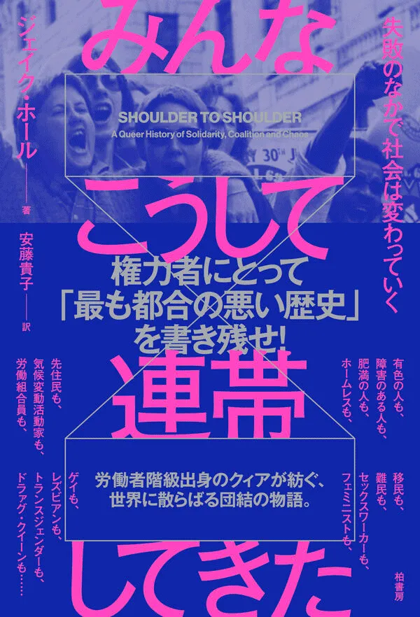

“権力者が団結を嫌うのは、それが搾取への抵抗という共通の目的をもつさまざまな人々を一つにするからだ。”（本文より） 過去に芽生えた希望がわたしたちの命綱。だからこそ、権力者にとって「いちばん都合の悪い歴史」を記憶しよう。「アライシップ」という言葉が生まれるずっと以前から存在した、団結と正義のための闘いの歴史に目を向けるための一冊。

“権力者が団結を嫌うのは、それが搾取への抵抗という共通の目的をもつさまざまな人々を一つにするからだ。”（本文より） 過去に芽生えた希望がわたしたちの命綱。だからこそ、権力者にとって「いちばん都合の悪い歴史」を記憶しよう。「アライシップ」という言葉が生まれるずっと以前から存在した、団結と正義のための闘いの歴史に目を向けるための一冊。
#オンライン反戦読書デモ0719 多分読了までありえないほどの時間がかかるのですが、頑張って読むぞ

#オンライン反戦読書デモ0719 #みんなこうして連帯してきた #100年先の憲法へ

#オンライン反戦読書デモ0719

"みんなこうして連帯してきた" ジェイク・ホール 著 安藤貴子 訳 このオンラインデモも含めて色んな連帯の形が増えてるのは吉兆であると信じたい #オンライン反戦読書デモ0719